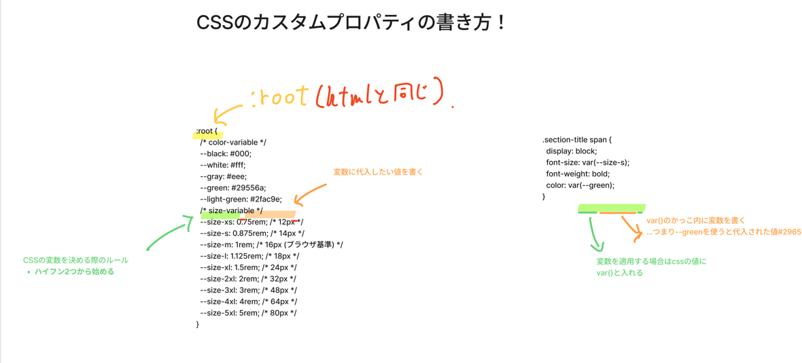
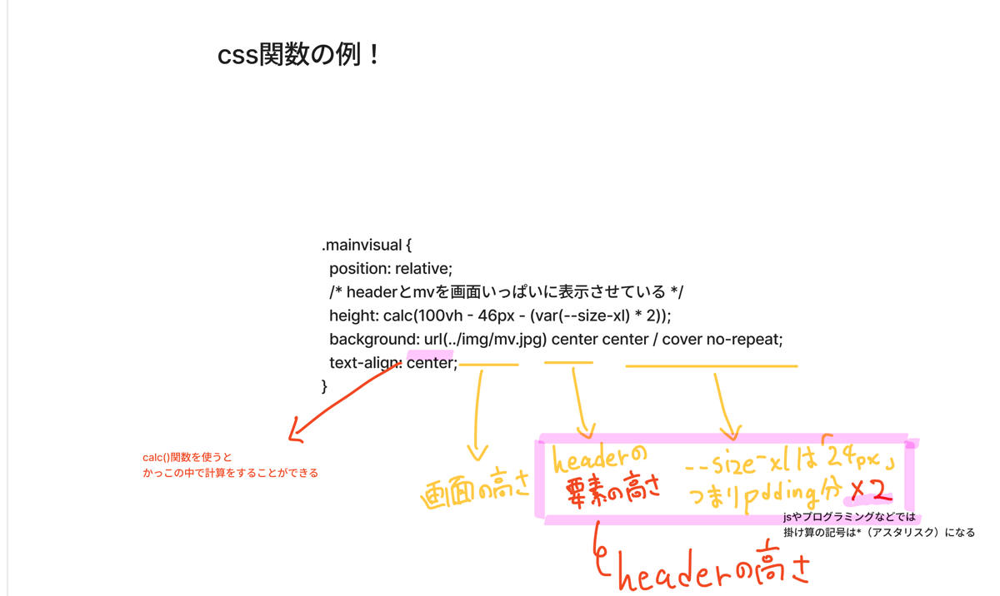

訓練校 IT スクール｜全2時間の集中授業
昨日のポートフォリオ（Nekota Koharu）講師例の解説を入口に、新ネタは「CSS変数（カスタムプロパティ）」と「CSS関数（calc / min / max / clamp）」。どちらもサイト全体を一括管理するための強力ツール。
| 時間 | セクション |
|---|---|
| 導入 | ポートフォリオ講師例の見せ方（リセット／スタイル／顧問の3分割） |
| 1時間目 | CSS変数（カスタムプロパティ） |
| 1時間目 | 変数の書き方ルール（:root / -- / var） |
| 2時間目 | CSS関数 calc() |
| 2時間目 | min() / max() / clamp() |
:root { --name: value; }（:rootはhtmlと同じ）-- から始めるvar(--name)calc()＝CSS内で計算（+ - * /）。掛け算は*（アスタリスク）min() / max() / clamp() で画面幅に応じた可変サイズ（リキッドレイアウト）昨日コーディングしたポートフォリオ（Nekota Koharu）の講師例。先生のCSSは3ファイル構成：
| ファイル | 役割 |
|---|---|
reset.css | ブラウザの初期スタイルを打ち消す |
style.css | 各セクションの個別設定（上書き用） |
common.css | 全体設定寄り（このページの中から見られる共通CSS） |
ファイルの役割を自分で決めて、書くものをぶらさないのが現場のコツ。1枚にまとめてもOK、複数に分けてもOK。
例えば緑 #29556a をサイト内の3〜4箇所で使うとき、毎回コピペするのではなく、「green」という名前で1か所に登録しておけば、そこを変えるだけで全部に反映される。これがカスタムプロパティ（CSS変数）。

:root（＝html）にハイフン2つ＋名前で色（--black/--white/--green等）とサイズ（--size-xs〜5xl）を定義。右の例は var(--size-s) や var(--green1) で使い回す「#29556a を全部置換」しようとして関係ないところまで変えちゃう事故が多い。変数なら最初から安全。
:root { --green: #29556a; /* 色 */ --size-m: 1rem; /* 16px（ブラウザ基準） */ --size-xl: 1.5rem; /* 24px */ }
:root＝html要素と同じ。プロジェクト全体で変数が使えるようになる定石-- から始める（これがCSS変数の目印）.section 等）に書くこともできるが、適用範囲がそのセレクター内に限定されて使いづらい→基本:rootでOK.section-title span { font-size: var(--size-s); color: var(--green); }
リセットCSSは「ブラウザの差をなくす」役割。変数はサイトのプロジェクト管理。役割が違うので混ぜない。書くならstyle.cssの上部（@charset "UTF-8";の直下）。「定義より下で使う」のが論理的。
例：ボタンの padding: 48px を「絶対に変えたくない」場所では、あえて変数を使わず直書き。一括変更の巻き添えを防ぐため。「どこに変数を入れるか」はデザインを見ながら判断する。
Figmaの有料版＋プラグインで、登録している色・フォントをCSS変数として一括書き出しできる。今は練習なので手書きだが、現場ではよく使うツール。
calc() はCSSの値の中で計算ができる関数。足し算・引き算・掛け算・割り算を組み合わせて、状況に応じた動的な値を作れる。

height: calc(100vh - 46px - (var(--size-xl) * 2)) ＝ 画面高さ − ヘッダー高さ − 上下paddingぶん。これでヘッダーとメインビジュアルがちょうど画面いっぱいに収まる「ヘッダーの下に画面いっぱいのメインビジュアル」を作りたい時、固定値（例：900px）では作れない。なぜなら：
.mainvisual { /* header と mv を画面いっぱいに表示させている */ height: calc(100vh - 46px - (var(--size-xl) * 2)); /* 画面高 − ヘッダー − padding分(24px×2) */ }
*（アスタリスク）
JSやプログラミング言語と同じで、CSSのcalc()内でも掛け算は *。× ではない。
※CSS変数と組み合わせると calc(100vh - var(--header-h)) のようにさらに柔軟に。なお完全ピッタリにはJSが必要（CSSだけだと数pxのズレは残る）。
画面幅に応じてサイズを柔軟に変える関数たち。これらが使えると「リキッドレイアウト」（様々な画面幅にぬるっと対応するデザイン）が作れる。今すぐ全部使えなくてOK、まずcalcから。
| 関数 | 意味 | 例 |
|---|---|---|
min(a, b) |
引数の最小値を取る → 最大値の設定として使える | width: min(500px, 50%);＝最大500pxで50%保持 |
max(a, b) |
引数の最大値を取る → 最小値の設定として使える | width: max(500px, 50%);＝最小500pxで50%保持 |
clamp(最小, 推奨, 最大) |
3つの間で挟む。最小〜最大の範囲で推奨値を取る | font-size: clamp(2.375rem, 5%, 5.125rem);＝最小〜最大の範囲で画面幅に応じた文字サイズ |
「200pxは下回らない・1000pxは超えない・その間は50%」のように、画面幅に追従しつつ上限下限を持つ柔軟なサイズが書ける。width: clamp(200px, 50%, 1000px);
「むず」レベルなのは事実。今すぐ全部使えなくてOK、まずcalc→慣れたらclampあたりが書けると一気にデザインの幅が広がる。
| 用語 | 意味 |
|---|---|
| カスタムプロパティ / CSS変数 | 再利用可能な値を1か所で管理する仕組み |
| :root | html要素と同じ。変数定義の定石セレクター |
| -- (ハイフン2つ) | CSS変数の名前の頭につける目印 |
| var(--name) | 定義した変数を呼び出す関数 |
| calc() | CSSの値内で計算（+ - * /） |
| * (アスタリスク) | 掛け算の記号（×ではない） |
| min(a, b) | 引数の最小値＝最大値の設定として使える |
| max(a, b) | 引数の最大値＝最小値の設定として使える |
| clamp(min, 推奨, max) | 3値で挟み込み。リキッドレイアウトの主役 |
| リキッドレイアウト | 画面幅に応じて柔軟に変わるレイアウト |
| 100vh | ビューポート（画面）の高さ100% |
| reset / style / common.css | CSS3分割の役割：初期化／個別／全体 |
:root { --name: value; } で定義、var(--name) で適用style.css の上部（リセットCSSには書かない）px / rem / 余白 も変数化できるcalc() で計算（掛け算は *）height: calc(100vh - ヘッダー − padding) で作れるmin() ＝最大値の設定として使えるmax() ＝最小値の設定として使えるclamp(min, 推奨, max) でフォントサイズを画面幅に追従させる「リセットCSSにこいつ（カスタムプロパティ）を書いてる人がいたら、センスないと思ってください。」
→ 役割を混ぜるな、という戒め。リセットは初期化、変数はプロジェクト管理。
「定義したものを適用するので、書くなら上の方かなと思いますね。」
→ プログラミングの基本：先に宣言してから使う。論理の自然な順序。
「calc関数を使わずにどうやってやるか分かる人がいたら是非教えてほしい。私には分からないので。」
→ 画面ぴったり高さの実装はcalcなしには無理、ということ。